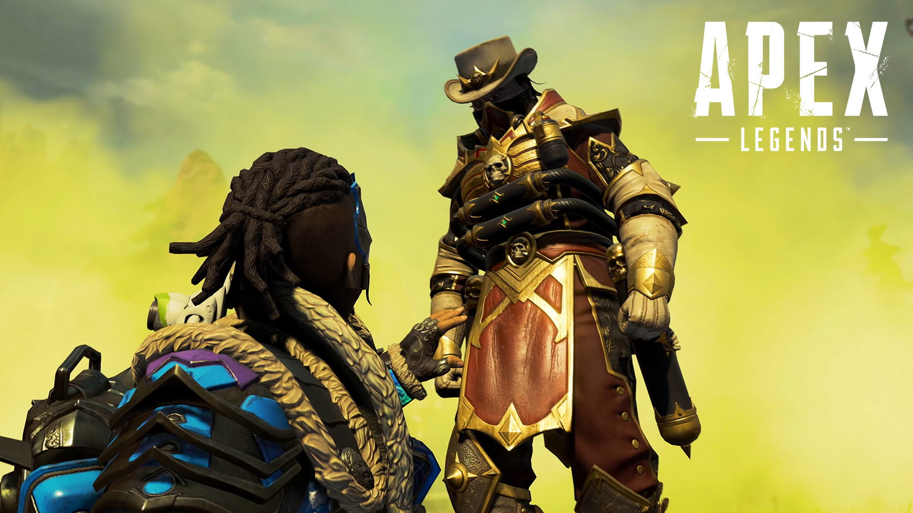

Apex Legends revela el evento Chaos Theory; notas del parche, skins e importantes cambios
Nerfeos a la Mastiff y a Caustic, opción de No llenar, lanzamiento en Switch, ubicación de Caustic y mucho más

Tal y como se había filtrado, Apex Legends tendrá un nuevo evento de colección para celebrar el lanzamiento en Nintendo Switch, el cual será el próximo 9 de marzo. En la misma fecha comenzará Chaos Theory, y viene junto a una actualización cargada de muchos cambios, nuevas skins y unas notas bastante densas que vamos a repasar a continuación.
Esta es la que antes se conocía como Depuradora de Agua, al sur de Cañón de los Reyes. Después de varios teasers, hemos visto que esta ubicación ha cambiado por completo con el objetivo de intentar que el combustible del Lugar del accidente llegara al Océano. Podéis ver una imagen a continuación de esta nueva ubicación:
Ring Fury: Este es un nuevo modo de juego por tiempo limitado que llega a Apex Legends el 9 de marzo y estará disponible hasta el final del evento, el próximo 23 de marzo. Este modo hace que dentro del anillo normal del juego, se abran otros anillos pequeños por todo el mapa que dañarán igual que el normal. Eso sí, se avisará antes de que se abra uno nuevo y las Leyendas gritarán cuando se vaya a abrir alguno.